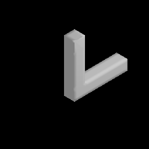

Inverse Rendering Impossible Objects
Projecting Escher to 3D

This project explores inverse rendering techniques to create 3D representations of impossible objects inspired by M.C. Escher's work.
Projecting Escher to 3D
This project explores inverse rendering techniques to create 3D representations of impossible objects inspired by M.C. Escher's work.